In order to see a rough distribution of movie studios and Oscar wins/nominations, we visualized frequency of awards or nominations for each studio:
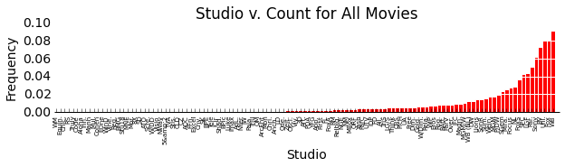 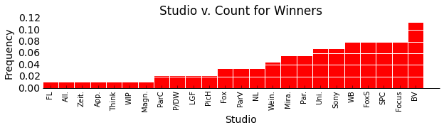 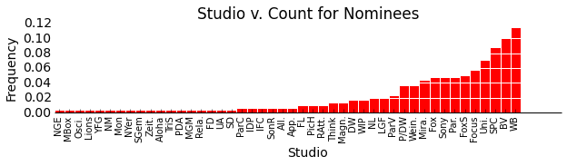An exploration of the studios producing Oscar-candidate movies reveals that some of the largest studios, particularly Buena Vista and Warner Brothers, are the most common studios amongst Oscar nominees and winners. As expected, studios which most frequently produce Oscar nominees are also among the studios that most frequently produce Oscar Winners. (Note: The above analysis is over all movie-based Oscars, as defined previously.)
Next wanting to investigate further how success in the Oscars goes with different quantitative movie data, we visualized the frequencies of wins and nominations and either the number of theaters or the gross revenue.
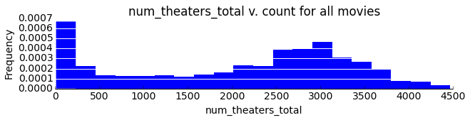 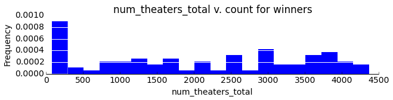 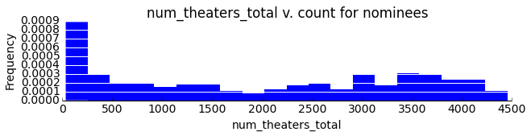 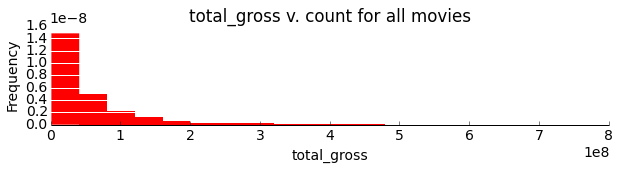 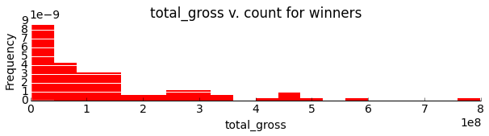 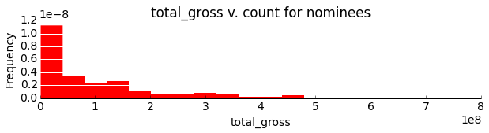As one might reasonably expect, Oscar winners and nominees are more likely to appear in more theaters during their first weekend and draw a larger gross revenue than their less successful counterparts. This result is shown the relative right skew in the nominee and winner histograms.
We chose to display the IMDB data here as it is roughly representative of the other review sources. For information about the other review sources, please see our process book.
We began by investigating the basic structure for the IMDB DataFrame:
Number of reviews: 435,277 Number of critics: 199,188 Number of Movies: 1900
We next decided to look at the average number of reviews per user to try to get an idea of the roughly the users' 'rating experience'
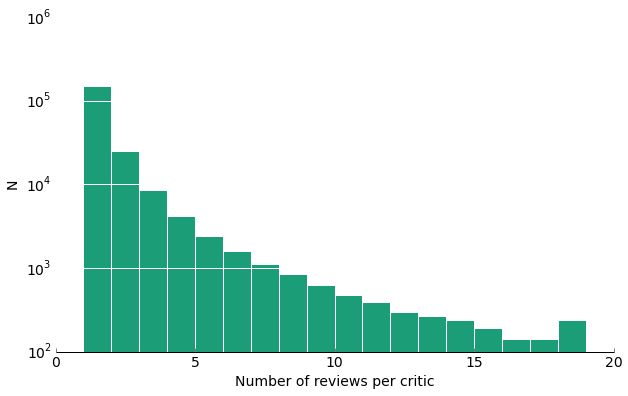As one can see, although we have a very large number of reviews and reviews, most of them do not interview that many movies themselves.
Next, we will visualize how the number of reviews changes over the years, and how the average ratings equivalently change.
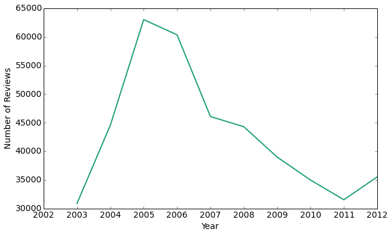Interestingly, the peak of user reviews is in 2005, with the number of reviews exponentially falling off until 2011. Thus, it seems that as IMDB became more widespread and popular, fewer people actually have been leaving reviews for movies.
Now that we have an idea of the distribution of the data over the years, let's look at the actual review ratings. On IMDB users have the option of rating movies without actually leaving a review. Here, we compare the overall movie rating to the average rating user critics give as an approximate measure of whether user critics or general users rate movies more harshly.
average movie rating: 6.27 / 10 average user critic rating: 6.27 / 10
From this measure, it appears that the user critics rate the movies the same as the average user. Let's try to visualize this a little more explicitly.
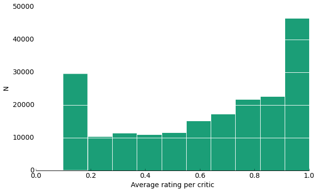From this histogram, it appears we have an almost bi-modal distribution where the highest frequency averages are at the polar ends. Considering that a user would be more likely to write a review for a movie if he or she absolutely hated or loved it, this isn't that surprising because then they too would rate it at the extremes.